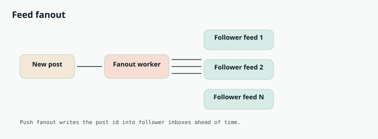

System Design
Chapter 30
Design: Instagram

Instagram is a feed sitting on top of a media problem. The feed is the timeline of posts from people you follow, and it carries the same hard trade off every feed does: do you do the work when someone posts, or when someone reads? On top of that, the posts are photos and videos, which changes how you store and deliver them.
Requirements
Users follow others and see a feed of recent posts, usually newest first or ranked by relevance.
Reads must be fast and are far more frequent than writes. The tricky part is that some users have millions of followers, which breaks the simple approaches.
The core choice: push versus pull
Fanout on write, the push model, does the work when you post: the post is immediately written into the precomputed feed of every follower. Reads then become a trivial lookup, which is wonderful, but a single post by someone with millions of followers triggers millions of writes.
Fanout on read, the pull model, does the work when you open the app: the feed is built on the fly by gathering recent posts from everyone you follow. Writes are cheap, but reads become expensive and slow, especially if you follow many people.
Write (fanout on post) Follower feed cache User posts Post service Fanout worker Follower feed cache Read Feed cache Follower Feed service precomputed list read Push writes a post into every follower's feed ahead of time, so reads are a simple lookup.
PROS CONS Push makes reads a fast, precomputed Push explodes on users with millions of lookup followers Pull keeps writes cheap and handles Pull makes every feed load do heavy celebrities well gathering work A hybrid gets the best of both for Keeping precomputed feeds fresh adds different user types complexity Ranking on top of either approach adds more cost
The hybrid that real systems use
The practical answer is a mix. Use push for ordinary users, so their followers get fast precomputed feeds. Use pull for the handful of celebrities with enormous followings, whose posts are merged in at read time instead of fanned out to millions. This hybrid sidesteps the worst case of each while keeping the common case fast.
T H E C E L E B R I T Y P R O B L E M D R I V E S T H E D E S I G N
If every account were small, pure push would be perfect. The entire reason for the hybrid is that a few accounts have millions of followers, and fanning a single post out to all of them would be crippling. Naming this trade off is exactly what a strong answer to this question sounds like.
W H A T M A K E S I N S T A G R A M S P E C I F I C
The feed logic is the push and pull mix from this chapter, but the media is the real work.
Photos and videos are large, so they never live in the main database. On upload they go to object storage, get processed into several resolutions, and are served through a CDN close to the viewer, while the database holds only small records like the media id, caption, and author. Stories and the explore page are separate ranked surfaces layered on the same building blocks. The heavy lifting is storing and delivering media fast, not storing text.
Going Deeper
The media pipeline behind a single photo
When a photo is uploaded it does not go into a database, it goes to object storage and kicks off processing that produces several sizes and formats, a thumbnail, a feed sized version, and a full size original. Those variants live in object storage and are served through a CDN, so each device pulls just the resolution it will actually display from a nearby edge. The database only stores a small record pointing at the media. This split is why feeds load quickly around the world: the heavy bytes are cached close to users, and the app never downloads more pixels than it shows.
Process CDN Upload Object storage make sizes edge cache Phone TV fetches 480p fetches 1080p each device pulls only the size it needs from a nearby edge Media never touches the database. It is processed into sizes, stored, and served from a CDN at the resolution each device needs.
T H E H Y B R I D F A N O U T F O R C E L E B R I T I E S
Writing a post into every follower's feed is great until an account has millions of followers, when one post triggers millions of writes. The fix is a hybrid: push posts into precomputed feeds for ordinary accounts, but for a handful of celebrities pull their recent posts in at read time and merge them into the feed. This keeps the common case fast while surviving the extreme case.
S T E P B Y S T E P
How an Instagram post is created and later appears in a follower's feed.
A user uploads a photo, which goes to object storage and is processed into several sizes. 1 A small post record with the media id, caption, and author is written to the database. 2
For a normal account, a fanout worker writes the new post id into each follower's 3 precomputed feed.
When a follower opens the app, the feed service reads their precomputed list of post ids. 4 The app fetches each post's media from the nearest CDN edge and renders the feed. 5
Interview drill — Feed
Feeds are a fan-out problem.
More drills in the Interview Lab.
Q1. Design Instagram feed
Q2. Celebrity problem
50M followers post?
Do not push to 50M timelines. Store post; mix at read/merge time.
Q3. Feed ranking
Not purely chronological?
Candidates from timeline/cache → features → light ranker → diversity.
Q4. Counter service
Likes at huge QPS.
Sharded in-memory counters; flush periodically; approximate OK.
Q5. Stories vs feed
Ephemeral stories?
Separate store with 24h TTL; CDN/blob lifecycle policies.